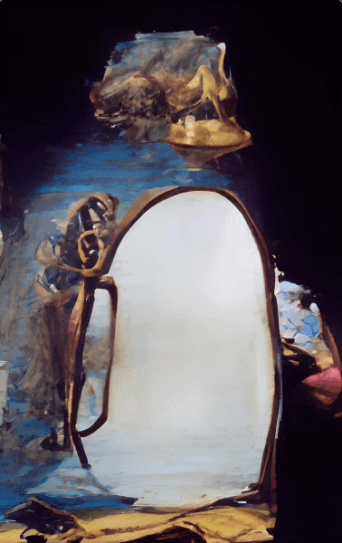

XXIX.
“As Khali’s representative at this meeting,” I said, “I want to relay her communication that she is expressly against the idea of the Penguin Liberation Front being a religious organization.”
We sat in a circle in Hector’s living room, amongst the crayon-coloured ruins of the former Antarctic palace, whilst Hector’s big brother Brazil brewed tea in the kitchen.
“And I want to second that notion,” Winfield said, adjusting the pillow upon which he sat. The pillows were originally sewn to serve as comforters for King Leroy’s legion of cats that he apparently kept as pets. “Not for any iconoclastic sentiments, but rather in the interest of symmetry: I think it’s more fitting for King Leroy’s profluent, cacophonic cornucopia of polyreligions to be juxtaposed against a sterile, ignostic, materialist point-of-view.”
Påola raised her hand.
“Yes?” Winfield said. Nearby, Loretta seemed to lie sleeping as she gnawed on what looked like a glorified cur-chew toy.
“I think Winfield’s notion about artistic symmetry is nice, but a bit hackneyed and archaic, considering it serving in the conceptual role of false dichotomy,” Påola said. “Why can’t there be more diversity on the side of the Penguin Liberation Front? After all, aren’t many realWorldRevolutionaries™ theologically-inclined?”
“Maybe there could be multiple factions of the Penguin Liberation Front?” I suggested. “After all, isn’t half the fun of having a resistance is to have intra-resistance in-fighting?”
Brazil Chavez walked into the living room and laughed, as he dangled four empty mugs on his left hand fingers, whilst carrying a ceramic tea kettle in his right hand. “Ah, that reminds me of my university days,” he said. He set each mug in front of everyone and then poured brown tea into each one.
Winfield shrugged. “Compromise suggestion: can we have the vanguard and the dominant majority be ignostic antitheists, whilst a small, secret minority harbor bizarre religious practices that attempt to uplift the political struggle to one of cosmic proportions?”
Påola smiled. “That sounds good to me.”
Winfield said, “And if the storyline progresses to have King Leroy’s kingdom toppled, we can have a nice little domestic skirmish between the PLF subfactions.”
“Sounds settled,” Brazil said, as he sat down and sipped the hot tea.
An AutoAlgoAdvisor app (focused on nonverbal body communication) alerted me to a strangeness in Brazil’s proximity to Påola. Winfield immediately t-t’d what my algo already noticed. “Note the creeper creepin’ on Påola.”
I almost t-t’d about Khali always ranting about Hector being creepy, but then remembered she often “joked” the same thing about me.
Instead I attempted to t-t Påola but, per usual, she wasn’t wearing her iContacts™.
“Well,” Påola responded to Brazil, “that part’s settled. But now we should brainstorm what the specifics of the secret rebellion religion are. Should we utilize real religious concepts like rogue elements of yeshianism, shamshounism, maniites, autochthonous traditions, et cetera?”

Brazil began to gaze directly at Påola in this creepy, unbroken manner that I’ve seen in cult leader documentaries. He opened his mouth to speak, but Winfield broke in.
“Brazil, is your wife religious?” Winfield asked
Brazil blinked. “Sort of…”
“What’s your wife’s name?” I asked.
“Omusupe,” he said. “We’re technically separated right now.”
“Oh no,” Påola said. “What happened?”
Brazil paused. “I have addiction issues. I recently went to a rehab in southeast FLEUR.”
Winfield said, “didn’t you say you were addicted to suhtawree?”
Brazil nodded.
“Why would you do that?” Påola asked. “You know how many people've been killed by that stuff in the past year?”
Winfield t-t’d me: “technically, it’s not suhtawree that is killing these people; but rather the illegality of suhtawree leads to there being an indeterminate amount of the active ingredient in any given massed package; furthermore, the other aspects mixed in the package can be indeterminate in nature and amount.”
Brazil nodded. “It was pretty stupid and selfish of me, I know.”
“So why did you do that stuff?” Påola asked again.
“I can theorize,” Brazil said. “But I am not sure it’s helpful to try and pinpoint a singular reason. I think it’s more helpful just to assume there’re a confluence of reasons that swell and shrink in importance at any given moment.”
“So are you clean?” Påola asked. “Are you still under the spell of the suhtawree?”
Brazil smiled weakly. “I think it’s considered hubris to assume that I’m free at this point. But I’m working on it. But enough about me: let’s keep focusing on these religiously inspired insurrectionists within Antarctica.”
Påola continued gazing at Brazil with sympathetic eyes. Winfield t-t’d: “I think our attempt to obstruct the creeping only aided and abetted.”
I shrugged. After all, [redacted].